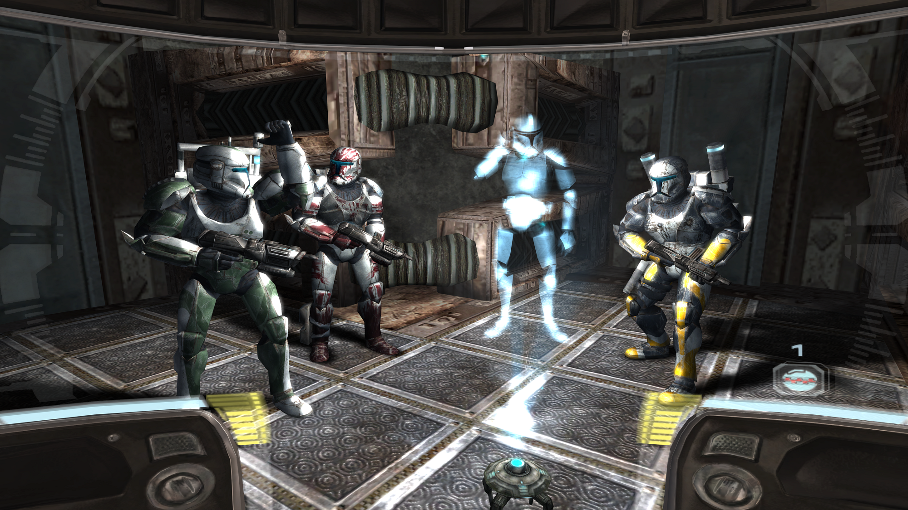

Star Wars Galaxies
Сегодня эта многопользовательская РПГ уже архаизм. Зато как приятно было исследовать в ней всю далекую, далекую галактику. Кроме джедаев и ситхов можно было отыгрывать и другие роли, например воинов, контрабандистов или инопланетных существ. Кроме того, стать джедаем в игре было очень сложно, что в целом смотрится реалистично. Для начала нужно было заслужить это.
Star Wars Republic Commandos
Лично для меня – это самый первый шутер по вселенной Звездных войн, в который я играл. Republic Commandos вышла в тот период, когда студия LucasArts несла золотые яйца в виде крутых игр. Мы играли за клонов-штурмовиков из отряда Дельта и выполняли разные боевые миссии между вторым и третьим эпизодом киновселенной. Игра была отличным тактическим шутером от первого лица, который временами становился настолько динамичным, что мог стоять на ровне с Halo. А так как нам представили штурмовиков еще до времен Империи, они действительно метко стреляли. Хотя на самом деле вы играли за клона, проходившего специальную подготовку, и были намного сильнее других клонов.